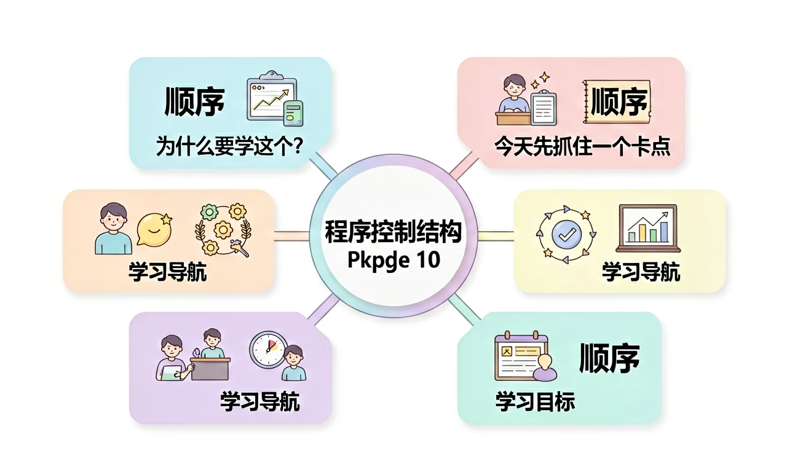
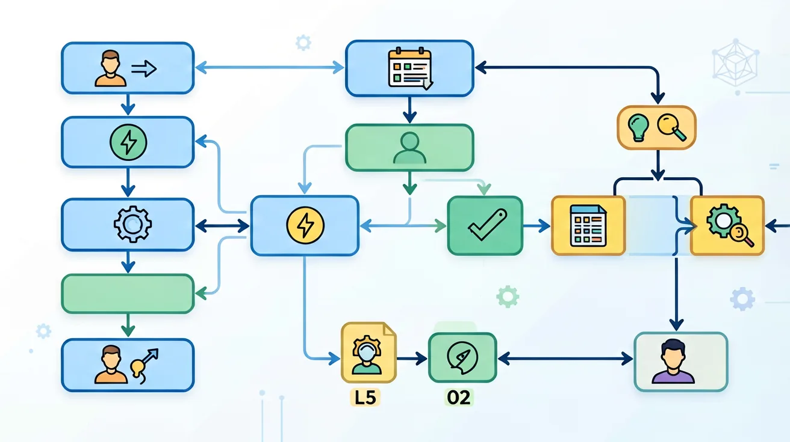

Worked Example
过程图：顺序、分支、循环分别解决不同执行问题。
示例推理：门禁系统如何选择控制结构
先按顺序读取刷卡时间、学生身份和体温数据；再用分支判断是否满足放行条件；最后用循环处理不断到来的每一位同学。这个例子说明，控制结构不是孤立语法，而是把真实业务转化为可执行流程的骨架。写算法时要同时写出变量、条件、循环次数和终止条件，否则程序只能描述局部步骤，不能稳定处理真实任务。
为什么程序不是一行一行写完就够了，还要分支和循环？

已经知道：你见过程序代码，也知道计算机能自动处理数据。
但问题是：真实系统不是背语法，而是把现实任务抽象成变量、规则、结构和结果。学习时要把每个词都落到可观察数据上，避免只会背术语。
所以学：学校门禁系统要根据时间、身份和体温决定是否放行，还要不断处理每一位同学。
选择后，AI 学伴会围绕你的卡点给提示。
处理“对全班 45 人逐个计算成绩等级”最需要哪种结构？
规范定义：控制结构是指组织语句执行顺序的基本方式，包括顺序结构、选择结构和循环结构。
机制解释：顺序解决先后，分支解决如果，循环解决重复。三者组合后，算法才能处理真实变化。
从生活实例出发，概述算法的概念与特征，运用恰当的描述方法和控制结构表示简单算法。
创设程序设计的活动情境，组织学生在解决问题的过程中探究顺序结构、选择结构和循环结构的特点。
题目给了什么输入和现象？
变量、规则、结构分别是什么？
为什么这个规则会产生该结果？
换一个场景还能不能用？
顺序像排队，分支像岔路口，循环像跑圈；没有终止条件，跑圈就会变成死循环。
调整数据量和条件复杂度，观察执行路径数。请用“变量、规则、结果”三句话解释。
拖动滑块后，写出变量如何影响结果。
只写循环体，不检查循环变量是否变化，导致程序无法停止。
只看表面语法，没检查前提和数据流。
先问变量是什么，再问规则是否成立。
先按顺序读取刷卡时间、学生身份和体温数据；再用分支判断是否满足放行条件；最后用循环处理不断到来的每一位同学。这个例子说明，控制结构不是孤立语法，而是把真实业务转化为可执行流程的骨架。写算法时要同时写出变量、条件、循环次数和终止条件，否则程序只能描述局部步骤，不能稳定处理真实任务。
请把“自动判定借书是否超期”拆成三层：第一层按顺序读取借书日期、归还日期和用户类型；第二层用分支判断是否超过可借天数；第三层用循环批量处理全班同学的借阅记录。最终产出不是一段空泛文字，而是一份能被同伴检查的流程说明：变量是否清楚，条件是否完整，循环是否能停止。

视频回顾本课主线：真实场景、概念定义、变量模型、迁移应用。
只要记住定义，就一定能解决真实程序任务。这个说法对吗？
为“自动判定借书是否超期”画出顺序、分支和循环步骤。
提交后会检查是否包含变量、规则和结果。
说出本课一个定义。
分析一个校园系统变量。
设计并验证一个方案。
一个完整答案最应该包含什么？
当需要处理多种情况时，可以使用多分支结构。比如根据月份判断季节：if 3<=month<=5 → 春季；elif 6<=month<=8 → 夏季等。更复杂的情况需要嵌套分支，即在分支内部再包含分支。例如网购优惠系统：首先if 会员 → 打8折；else → 然后if 购物满200 → 打9折；else → 无折扣。嵌套分支要注意缩进对齐，Python依靠缩进来确定代码层次。典型错误是缩进混乱导致逻辑错误。另一个例子是闰年判断：先判断能否被4整除，再嵌套判断能否被100整除，最后判断能否被400整除。嵌套分支虽然强大，但超过3层就会降低可读性，此时应考虑使用其他方法重构代码。
✅ 错因1：混淆=和==，在条件判断中使用赋值运算符导致逻辑错误
✅ 其实else还可以与循环配合使用
✅ 诊断3：缩进错误是Python初学者最常见的控制结构问题，特别是嵌套结构中的缩进不一致
先独立作答，再点选项查看对错与错因。
气象站程序需要跳过无效数据(-99)继续处理，应使用：
当温度连续3天低于0℃时触发寒潮警报，最适合的结构是：
计算7天有效温度平均值时，发现程序将周末无数据(显示为null)也计入除数，应如何修改？
补全温度警报程序：当温度____35℃时输出'高温红色预警'，否则输出'正常'。
答案：>
分支结构需要比较运算符判断条件
气象数据采集循环中，____语句可以立即终止整个循环流程。
答案：break
break用于完全跳出当前循环结构
关于循环结构的理解正确的是：
分析气象站原始数据中存在传感器异常值（如>50℃或<-30℃）的情况
❓ 为什么我写的代码总是从上往下执行，不能跳着来吗？
❓ if-else和switch到底什么时候用哪个？搞不懂啊！
❓ 循环里的变量怎么老是不听使唤，到底什么时候该++？
学完这一课，这些问题你都能自信地回答。
